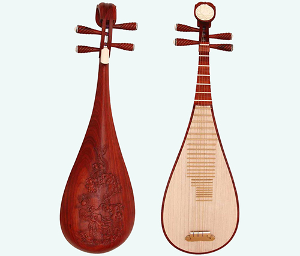

中国的传统弹拨乐器
我国的弹拨乐器分横式与竖式两类。横式，如：筝(古筝和转调筝)、古琴、扬琴和独弦琴等；竖式，如：琵琶、阮、月琴、三弦、柳琴、冬不拉和扎木聂等。
弹奏乐器音色明亮、清脆。右手有戴假指甲与拨子两种弹奏方法。右手技巧得到较充分发挥，如弹、挑、滚、轮、勾、抹、扣、划、拂、分、摭、拍、提、摘等。右手技巧的丰富，又促进了左手的按、吟、擞、煞、绞、推、挽、伏、纵、起等技巧的发展。弹奏乐器除独弦琴外，大都节奏性强，但余音短促，须以滚奏或轮奏长音。弹拨乐器一般力度变化不大。在乐队中除古琴音量较弱，其它乐器声音穿透力均较强。弹拨乐器除独弦琴外，多以码(或称柱)划分音高，竖式用相、品划分音高，分为无相、无品两种。除按五声音阶排列的普通筝等外，一般都便于转调。各类弹奏乐器演奏泛音有很好的效果。除独弦琴外，皆可演奏双音、和弦、琵音和音程跳跃。
典型乐器：琵琶、筝、扬琴、七弦琴(古琴)、热瓦普、冬不拉、阮、柳琴、三弦、月琴、弹布尔。
|  |
©2017 - 柴臻豪 胡苏兴 回首页 |